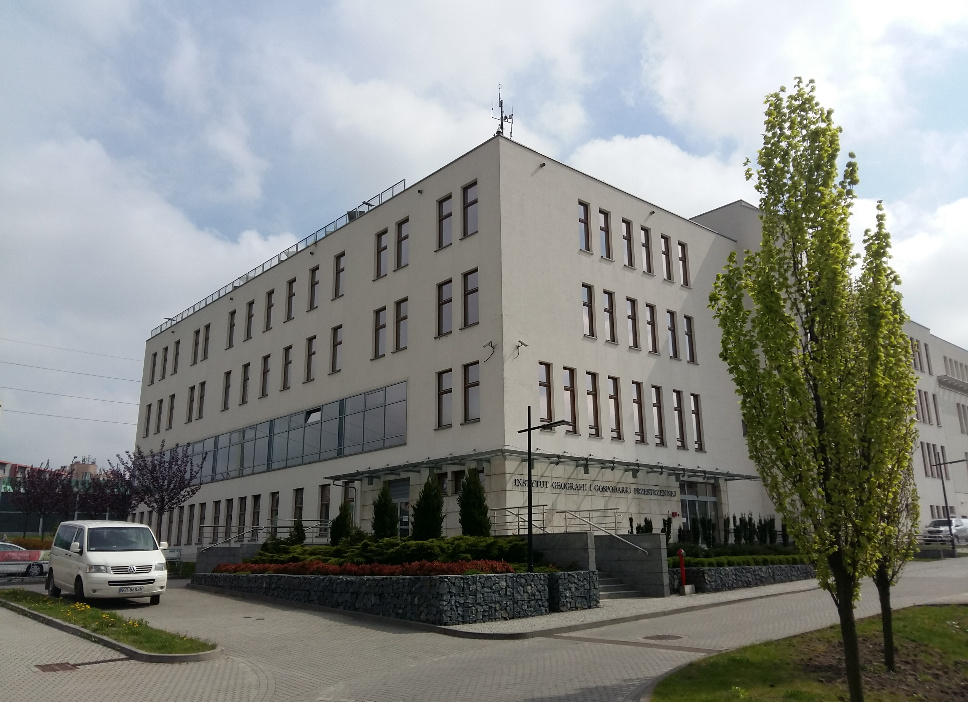
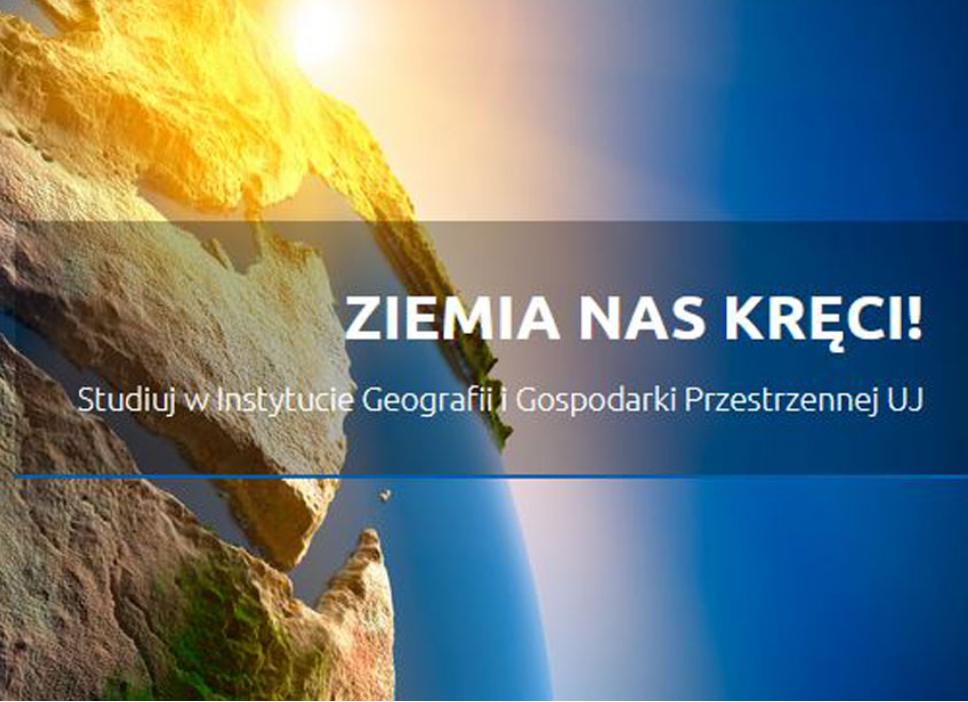
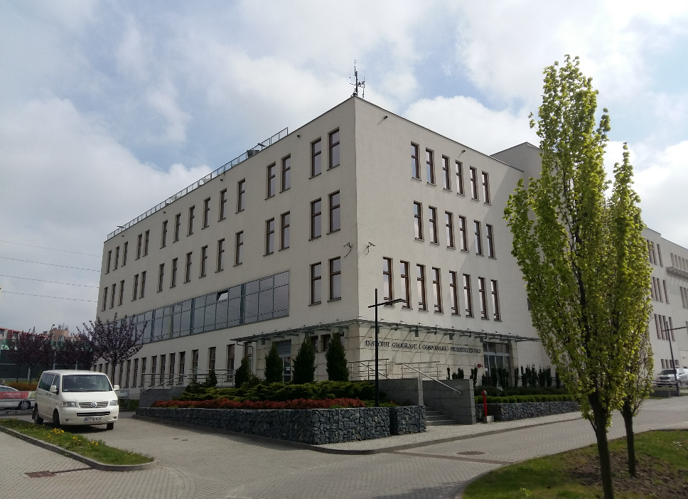
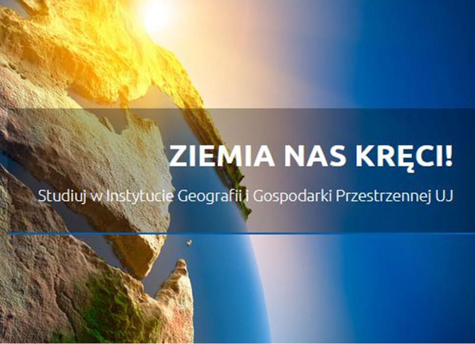

Wydział Geografii i Geologii UJ
Wydział Geografii i Geologii Uniwersytetu Jagiellońskiego w Krakowie to miejsce, gdzie
spotykają się pasja do odkrywania świata oraz badania procesów geologicznych i geograficznych.
Powstały na fundamentach długiej tradycji nauk przyrodniczych, wydział ten oferuje studia
w dziedzinach takich jak geografia, geologia, geofizyka i ochrona środowiska. Studenci
mają możliwość pracy w nowoczesnych laboratoriach oraz uczestnictwa w wyprawach terenowych,
które umożliwiają im zdobycie praktycznych umiejętności i lepszego zrozumienia procesów
zachodzących na Ziemi. Wydział aktywnie współpracuje z ośrodkami badawczymi na całym świecie,
prowadząc projekty mające na celu ochronę środowiska i badanie zmian klimatycznych.
Jest to wyjątkowe miejsce dla osób, które chcą zgłębiać tajemnice naszej planety oraz
przyczyniać się do zrównoważonego rozwoju na poziomie lokalnym i globalnym.
 


